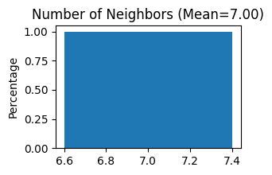
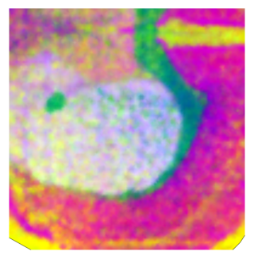
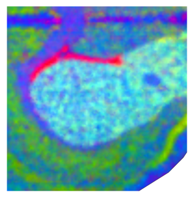
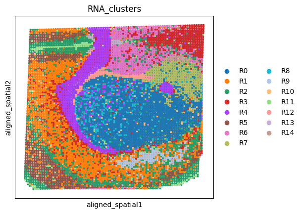
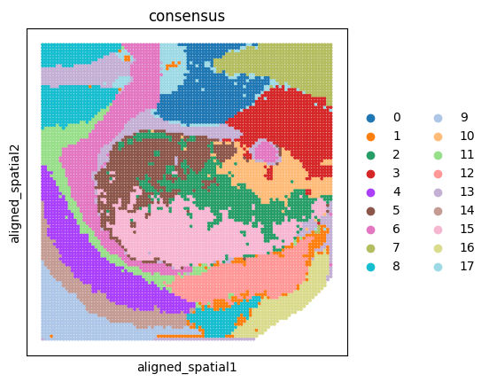
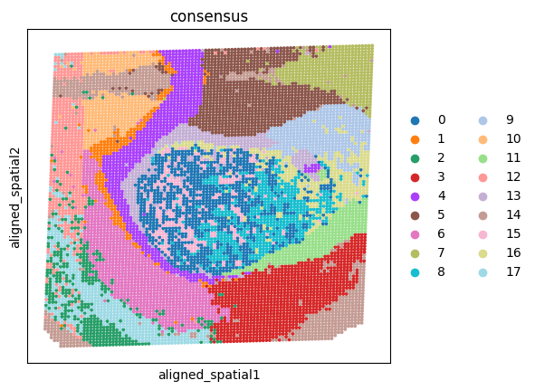
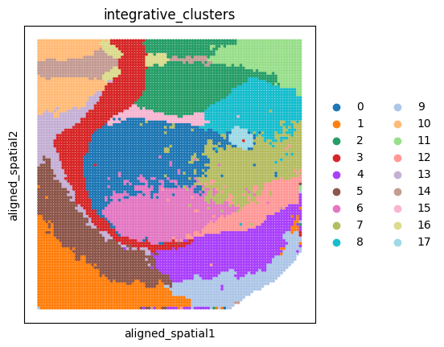
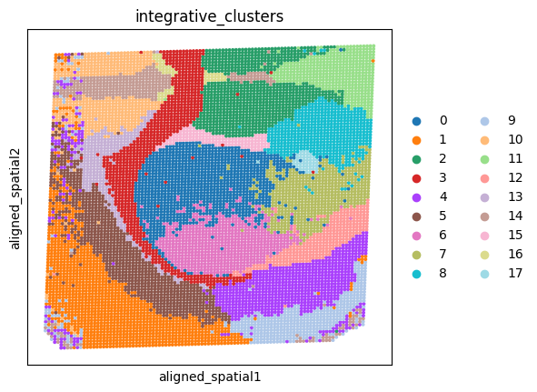

Tutorial 3: Aligning spatial transcriptomics data and spatial epigenomics data of mouse coronal brain slices
Data Preparation
Please download the required data files from the provided link: Download here
H3K27me3_RNA.h5adH3K4me3_PEAK.h5ad
After downloading, place both files into the datasets folder located in the same directory as this notebook.
The folder structure should be organized as follows:
project_root/
│
├── datasets/
│ └── MBCS2/
│ ├── H3K27me3_RNA.h5ad
│ └── H3K4me3_PEAK.h5ad
│
├── Tutorial3_Aligning_spatial_transcriptomics_data_and_spatial_epigenomics_data_of_mouse_coronal_brain_slices.ipynb
│
└── SpaMOMA/
import packages
[1]:
import os
import scanpy as sc
import anndata
from SpaMOMA.SpaMOMA import SpaMOMA
Specify Slice Metadata
[2]:
save_directory = "./SpaMOMA_output/MBCS2/"
spamoma = SpaMOMA(save_dir=save_directory)
spamoma.add_slice(
sample_id="H3K27me3_RNA",
raw_data_path="./datasets/MBCS2/H3K27me3_RNA.h5ad",
feature="rna"
)
spamoma.add_slice(
sample_id="H3K4me3_PEAK",
raw_data_path="./datasets/MBCS2/H3K4me3_PEAK.h5ad",
feature="peak"
)
spamoma.set_reference('H3K4me3_PEAK')
[3]:
print(f"aligning {[sid for sid in spamoma.input_slice_dict.keys() if sid != spamoma.reference_sample_id]} to {spamoma.reference_sample_id}")
aligning ['H3K27me3_RNA'] to H3K4me3_PEAK
Data Preprocessing
[4]:
spamoma.preprocess_input_slices()
preprocessing rna features...
------Calculating spatial graph...
The graph contains 68264 edges, 9752 cells.
7.0000 neighbors per cell on average.
Size of Input: (9752, 3000)
2026-02-19 16:17:17.147232: W tensorflow/core/common_runtime/gpu/gpu_device.cc:2211] Cannot dlopen some GPU libraries. Please make sure the missing libraries mentioned above are installed properly if you would like to use GPU. Follow the guide at https://www.tensorflow.org/install/gpu for how to download and setup the required libraries for your platform.
Skipping registering GPU devices...
2026-02-19 16:17:17.155966: I tensorflow/compiler/mlir/mlir_graph_optimization_pass.cc:382] MLIR V1 optimization pass is not enabled
100%|██████████| 500/500 [04:01<00:00, 2.07it/s]
preprocessing peak features...
------Calculating spatial graph...
The graph contains 66836 edges, 9548 cells.
7.0000 neighbors per cell on average.
Size of Input: (9548, 100)
2026-02-19 16:21:43.918071: W tensorflow/core/common_runtime/gpu/gpu_device.cc:2211] Cannot dlopen some GPU libraries. Please make sure the missing libraries mentioned above are installed properly if you would like to use GPU. Follow the guide at https://www.tensorflow.org/install/gpu for how to download and setup the required libraries for your platform.
Skipping registering GPU devices...
100%|██████████| 500/500 [01:06<00:00, 7.55it/s]


Generate Spatial Pattern Images
[5]:
spamoma.generate_imgs()
generating spatial pattern image... gaussian_sigma:1.0, interpolation_method:linear, max_distance_ratio"1.2
saving image...

Img for H3K27me3_RNA is saved to ./SpaMOMA_output/MBCS2/H3K27me3_RNA/RGB.png
generating spatial pattern image... gaussian_sigma:1.0, interpolation_method:linear, max_distance_ratio"1.2
saving image...

Img for H3K4me3_PEAK is saved to ./SpaMOMA_output/MBCS2/H3K4me3_PEAK/RGB.png
[6]:
spamoma.input_slice_dict
[6]:
{'H3K27me3_RNA': {'sample_id': 'H3K27me3_RNA',
'raw_data_path': './datasets/MBCS2/H3K27me3_RNA.h5ad',
'feature': 'rna',
'pseudo_color_key': 'pca',
'processed_data': AnnData object with n_obs × n_vars = 9752 × 3000
obs: 'nCount_Spatial', 'nFeature_Spatial', 'nCount_SCT', 'nFeature_SCT', 'nCount_H3K27me3', 'nFeature_H3K27me3', 'nCount_peaks', 'nFeature_peaks', 'RNA_clusters', 'H3K27me3_clusters', 'spot_x', 'spot_y', 'img_x', 'img_y', 'batch', 'my_pixel_x', 'my_pixel_y'
var: 'name', 'highly_variable', 'highly_variable_rank', 'means', 'variances', 'variances_norm'
uns: 'hvg', 'log1p', 'spatial_neighbors', 'moranI'
obsm: 'X_lsi', 'X_pca', 'X_umap', 'spatial', 'pca'
obsp: 'spatial_connectivities', 'spatial_distances',
'SPI_path': './SpaMOMA_output/MBCS2/H3K27me3_RNA/RGB.png'},
'H3K4me3_PEAK': {'sample_id': 'H3K4me3_PEAK',
'raw_data_path': './datasets/MBCS2/H3K4me3_PEAK.h5ad',
'feature': 'peak',
'pseudo_color_key': 'pca',
'processed_data': AnnData object with n_obs × n_vars = 9548 × 35270
obs: 'nCount_Spatial', 'nFeature_Spatial', 'nCount_SCT', 'nFeature_SCT', 'nCount_H3K4me3', 'nFeature_H3K4me3', 'nCount_peaks', 'nFeature_peaks', 'RNA_clusters', 'H3K4me3_clusters', 'spot_x', 'spot_y', 'img_x', 'img_y', 'batch', 'my_pixel_x', 'my_pixel_y'
var: 'vst.mean', 'vst.variance', 'vst.variance.expected', 'vst.variance.standardized', 'vst.variable', 'count', 'percentile'
obsm: 'X_lsi', 'X_pca', 'X_umap', 'spatial', 'pca',
'SPI_path': './SpaMOMA_output/MBCS2/H3K4me3_PEAK/RGB.png'}}
Model Training
[7]:
spamoma.train(coarse_epochs=1000,fine_epochs=1000, coarse_checkpoint_save_step=100,fine_checkpoint_save_step=100,parallel_mode=True,coarse_gpu=2,fine_gpu=2)
start coarse adaptation...
start fine adaptation...
fine adaptation done!
coarse adaptation done!
Slice Alignment
[8]:
spamoma.align_slices()
aligned H3K4me3_PEAK adata is saved to: ./SpaMOMA_output/MBCS2//alignment_output/H3K4me3_PEAK.h5ad
****************** aligning H3K27me3_RNA to H3K4me3_PEAK ..... ******************
start coarse alignment...
match params: {'model_key': 'roma', 'match_threshold': 0.999, 'extract_max_keypoints': 4096, 'force_resize': True, 'image_height': 560, 'image_width': 560, 'choice_geometry_type': 'Homography'}
Loading Roma model: ./SpaMOMA_output/MBCS2//coarse_model/adapted_model_epoch_500.pth
current Roma instance ID: 140651558015088
preprocessing is already resized
Force resize to 560x560
coarse alignment done!
start fine alignment...
Loading Roma model: ./SpaMOMA_output/MBCS2//fine_model/adapted_model_epoch_500.pth
current Roma instance ID: 140651558007664
preprocessing is already resized
Force resize to 560x560
aligned H3K27me3_RNA adata is saved to: ./SpaMOMA_output/MBCS2//alignment_output/H3K27me3_RNA.h5ad
fine alignment done!
Visualize Alignment Results
[9]:
adata1=spamoma.read_aligned_data('H3K4me3_PEAK')
adata2=spamoma.read_aligned_data('H3K27me3_RNA')
[10]:
adata_concat=anndata.concat([adata1,adata2])
sc.pl.spatial(adata_concat,color='RNA_clusters',spot_size=25,basis='aligned_spatial')

Omics-to-omics translation
transfer omics from adata2 to adata1, and transfer omics from adata1 to adata2
[ ]:
adata1_complemented=spamoma.SpaMOMA_translate(adata1,adata2,save_path='./SpaMOMA_output/MBCS2/translation_output/H3K4me3_PEAK_complemented.h5ad')
adata2_complemented=spamoma.SpaMOMA_translate(adata2,adata1,save_path='./SpaMOMA_output/MBCS2/translation_output/H3K27me3_RNA_complemented.h5ad')
Translating omics-data from adata_src to adata_target...
Translating omics-data from adata_src to adata_target...
Identify spatial domains for each translated slice1
[12]:
adata=spamoma.SpaMOMA_clustering(adata1,'peak',adata1_complemented,'rna',data_type='Spatial-epigenome-transcriptome',n_domains=18,
method_list=['PRESENT','MISO','SpatialGlue'],cluster_types=['leiden','louvain','mclust'],add_key='consensus')
sc.pl.spatial(adata,color='consensus',basis='aligned_spatial',spot_size=25)
************ running SpatialGlue ***************
processing peak
processing rna
100%|██████████| 1600/1600 [00:44<00:00, 35.93it/s]
Model training finished!
************ running MISO ***************
CUDA is available. GPU: NVIDIA A100 80GB PCIe
************ running PRESENT ***************
Loading data and parameters...
Input data has been loaded
Computing METIS partitioning...
Done!
Model training: 24%|██▍ | 24/100 [03:47<12:00, 9.47s/it, NLL_loss=1.36, BNN_loss=1.7, MSE_loss=0.835, IOA_loss=0.148, ES counter=20, ES patience=20]
Early stop the training process
Succeed to find 18 clusters at resolution 1.078
Succeed to find 18 clusters at resolution 1.125
R[write to console]: __ __
____ ___ _____/ /_ _______/ /_
/ __ `__ \/ ___/ / / / / ___/ __/
/ / / / / / /__/ / /_/ (__ ) /_
/_/ /_/ /_/\___/_/\__,_/____/\__/ version 6.1.1
Type 'citation("mclust")' for citing this R package in publications.
fitting ...
|======================================================================| 100%
Cannot find the number of clusters
Succeed to find 18 clusters at resolution 1.500
fitting ...
|======================================================================| 100%
Succeed to find 18 clusters at resolution 0.469
Succeed to find 18 clusters at resolution 0.609
fitting ...
|======================================================================| 100%
got consensus_matrix
got consensus_labels

[13]:
cluster_save_dir=f"{save_directory}/cluster_result_single_slice/"
if not os.path.exists(cluster_save_dir):
os.makedirs(cluster_save_dir,exist_ok=True)
adata.write(f'{cluster_save_dir}/H3K4me3_PEAK.h5ad')
Identify spatial domains for each translated slice2
[14]:
adata=spamoma.SpaMOMA_clustering(adata2,'rna',adata2_complemented,'peak',data_type='Spatial-epigenome-transcriptome',n_domains=18,
method_list=['PRESENT','MISO','SpatialGlue'],cluster_types=['leiden','louvain','mclust'],add_key='consensus')
sc.pl.spatial(adata,color='consensus',basis='aligned_spatial',spot_size=25)
************ running SpatialGlue ***************
processing rna
WARNING: adata.X seems to be already log-transformed.
processing peak
100%|██████████| 1600/1600 [00:36<00:00, 44.15it/s]
Model training finished!
************ running MISO ***************
CUDA is available. GPU: NVIDIA A100 80GB PCIe
************ running PRESENT ***************
Loading data and parameters...
Input data has been loaded
Computing METIS partitioning...
Done!
Model training: 24%|██▍ | 24/100 [04:42<14:55, 11.79s/it, NLL_loss=0.842, BNN_loss=1.87, MSE_loss=0.763, IOA_loss=0.292, ES counter=20, ES patience=20]
Early stop the training process
Succeed to find 18 clusters at resolution 1.090
Succeed to find 18 clusters at resolution 1.359
fitting ...
|======================================================================| 100%
Succeed to find 18 clusters at resolution 0.938
Succeed to find 18 clusters at resolution 1.195
fitting ...
|======================================================================| 100%
Succeed to find 18 clusters at resolution 0.562
Succeed to find 18 clusters at resolution 1.500
fitting ...
|======================================================================| 100%
got consensus_matrix
got consensus_labels

[15]:
cluster_save_dir=f"{save_directory}/cluster_result_single_slice/"
if not os.path.exists(cluster_save_dir):
os.makedirs(cluster_save_dir,exist_ok=True)
adata.write(f'{cluster_save_dir}/H3K27me3_RNA.h5ad')
Jointly identify spatial domains across the two translated slices
[16]:
multiple_slices_dict={
'H3K4me3_PEAK':{
'peak':adata1.copy(),
'rna':adata1_complemented.copy()
},
'H3K27me3_RNA':{
'peak':adata2_complemented.copy(),
'rna':adata2.copy()
}
}
reference_modality_dict={
'H3K4me3_PEAK':'peak',
'H3K27me3_RNA':'rna'
}
[ ]:
adata_dict=spamoma.SpaMOMA_clustering_multiple_slices(multiple_slices_dict,reference_modality_dict,batch_key='batch',n_domains=18)
sc.pl.spatial(adata_dict['H3K4me3_PEAK'],color='integrative_clusters',basis='aligned_spatial',spot_size=25)
sc.pl.spatial(adata_dict['H3K27me3_RNA'],color='integrative_clusters',basis='aligned_spatial',spot_size=25)
Loading data and parameters...
Input data has been loaded
First-stage trains basic model: 22%|██▏ | 22/100 [07:44<27:26, 21.11s/it, NLL_loss=0.986, BNN_loss=7.29, MSE_loss=0.733, IOA_loss=0.283, ES counter=20, ES patience=20]
Early stop the first-stage training process
Second-stage trains BC model: 10%|█ | 10/100 [10:27<1:34:08, 62.76s/it, IBA_loss=1.04, IBP_loss=0.113, DISC_loss=0.698, GEN_loss=-0.698, ES counter=10, ES patience=10]
Early stop the second-stage training process
Succeed to find 18 clusters at resolution 0.562
========== Processing batch: H3K4me3_PEAK ==========
========== Processing batch: H3K27me3_RNA ==========


[ ]:
cluster_save_dir=f"{save_directory}/cluster_result_multiple_slices/"
if not os.path.exists(cluster_save_dir):
os.makedirs(cluster_save_dir,exist_ok=True)
adata_dict['H3K4me3_PEAK'].write(f'{cluster_save_dir}/H3K4me3_PEAK.h5ad')
adata_dict['H3K27me3_RNA'].write(f'{cluster_save_dir}/H3K27me3_RNA.h5ad')